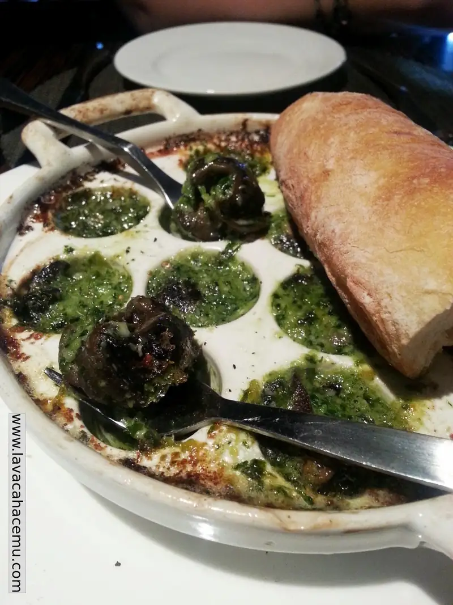
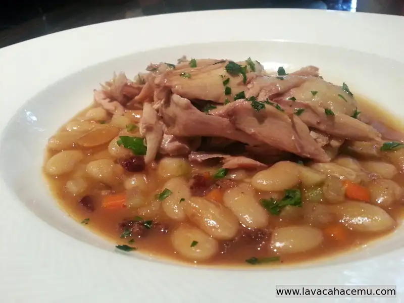
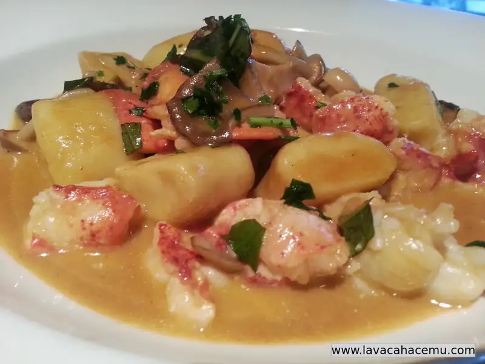
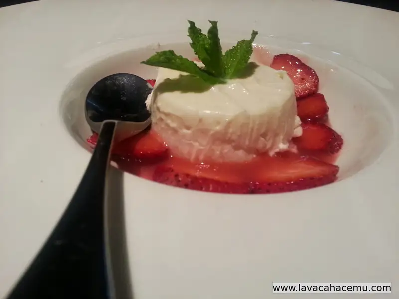

Nosh Euro Bistro Restaurants
1. nosh
/näSH/
Noun Food.
Verb Eat food enthusiastically or greedily: "you can nosh to your heart's content"; "noshing my favorite food".
Synonyms food - chow - grub
So, while visiting this restaurant today, after a few weeks hiatus from "quiet" dining.. I remembered that we promised to compile a list of eateries to visit in Dallas. Not because we're experts in the matter, but we do try and get out of the house from time to time and enjoy the various dishes from our multicultural city. Today as treat day, once again, thanks to groupon, this, I believe is the 4th time we've been to Nosh, and every time has been worth it. Yelp has it categorized as one of the $$ places, and yes, it is on the expensive side; didn't I just say that today was treat day?
When you get there, well, funny enough, some of the best places we've been to in Dallas are hole-in-the-wall strip mall places, we've learned not to judge a place by it's exterior appearance. When you come in, there's a bar on the left where, I would assume that if you don't have a reservation you'd have to wait for your table and to the very front of you is a view of the kitchen in all it's steaming, frying, sauteing glamour. Unfortunately, today we were greeted by what we assume was some relative of the chef/owner that was severely under-dressed, and, much to out non-surprise looks like she speaks Spanish, but guess what? "doesn't".. anywhoo.. reservation? yes... ok, come this way. Seated at our tables we scanned what we already knew was on the menu (from the page above), but even after debating one way or the other, scallops? well, ok, oh, a wagyu hamburger? no, you know what? I didn't put on a nice shirt so I would eat with my hands, and hell no, I will NOT eat a hamburger with knife and fork, that's just wrong ಠ_ಠ. Escargot? yes, of course! we've also had the ahi tuna tartare that is very good.

{kind=link}
Main dish from the specials menu.. rabbit confit with canellini beans, call me beaner, but God dayum those frenchies know how to cook good bean casseroles!

{kind=link}
Entreé #2: Gnocchi with lobster and wild mushrooms, ok, us westerners get so excited about lobster and then the o'l lobster comes and... hommard... not OUR rock-lobster... it's not bad, but, in our minds at least, it's definitely not lobster. Potatoe potato..

{kind=link}
And the desert! A ricotta pana cotta... damn good! we especially like the non-americanness of the dish, it's not overly sweet like if you were at chain restaurant and ordered apple pie a la mode or something, no, it's slightly sweet, and in every smooth spoonful you can actually taste that it's made out of cheese, not a friggin' sugar cane.

{kind=link}
All in all, Nosh has yet to disappoint, yes, I would recommend that you try to go before the dinner rush because in my case, some of the beans were a bit undercooked. And our waiter was a bit of a socially awkward penguin, not noticing that we were there to enjoy our food and dining experience; all is forgiven because he was noticeably embarrassed for trying to take our plates away too soon.